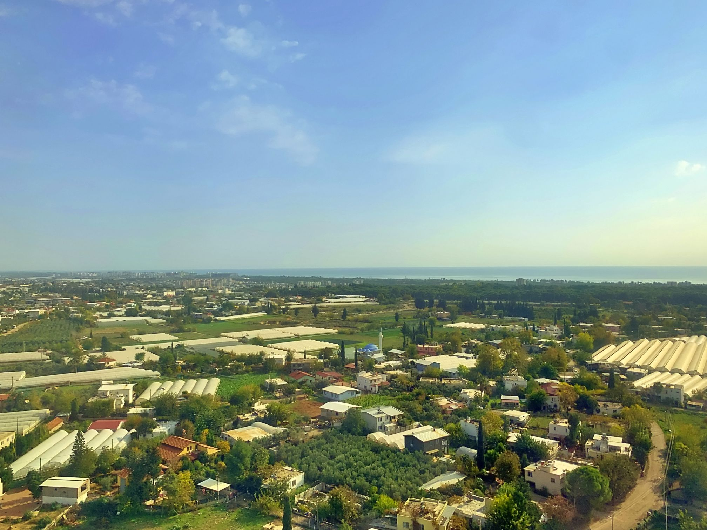
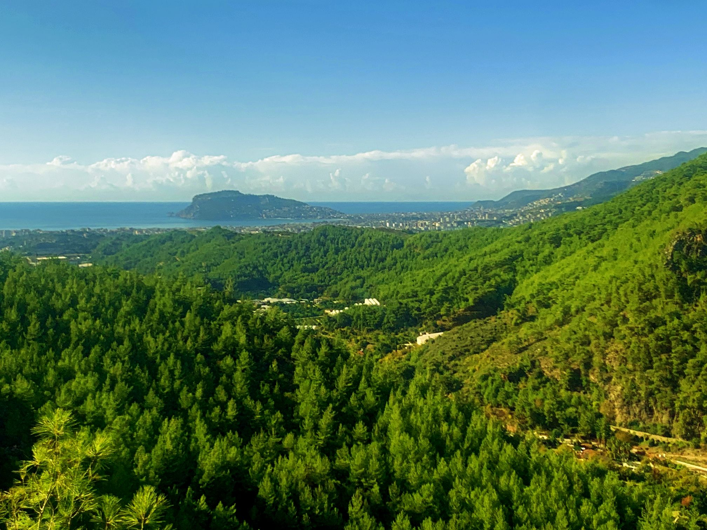
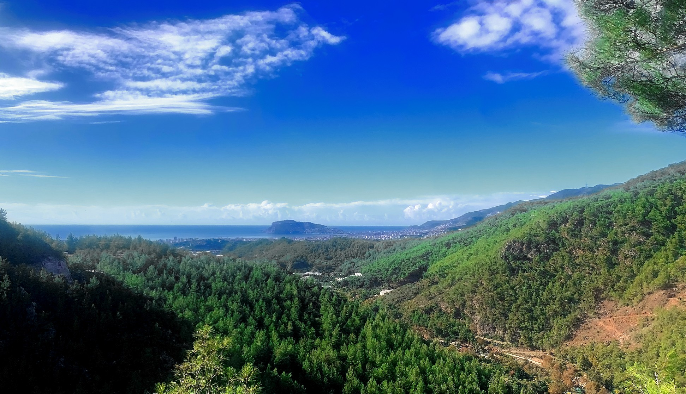
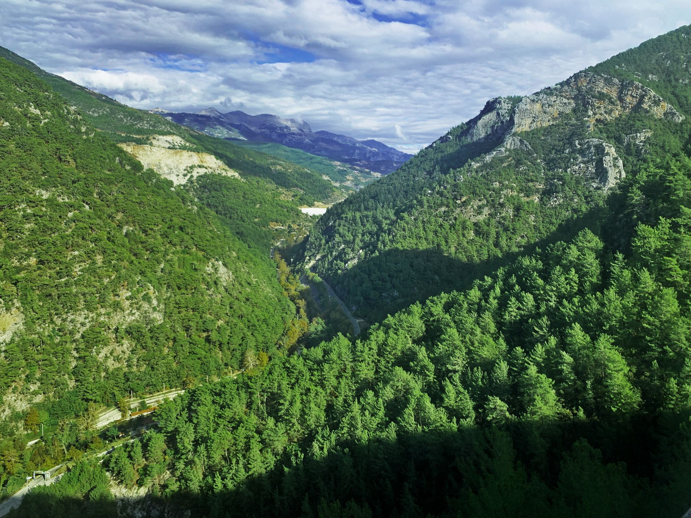
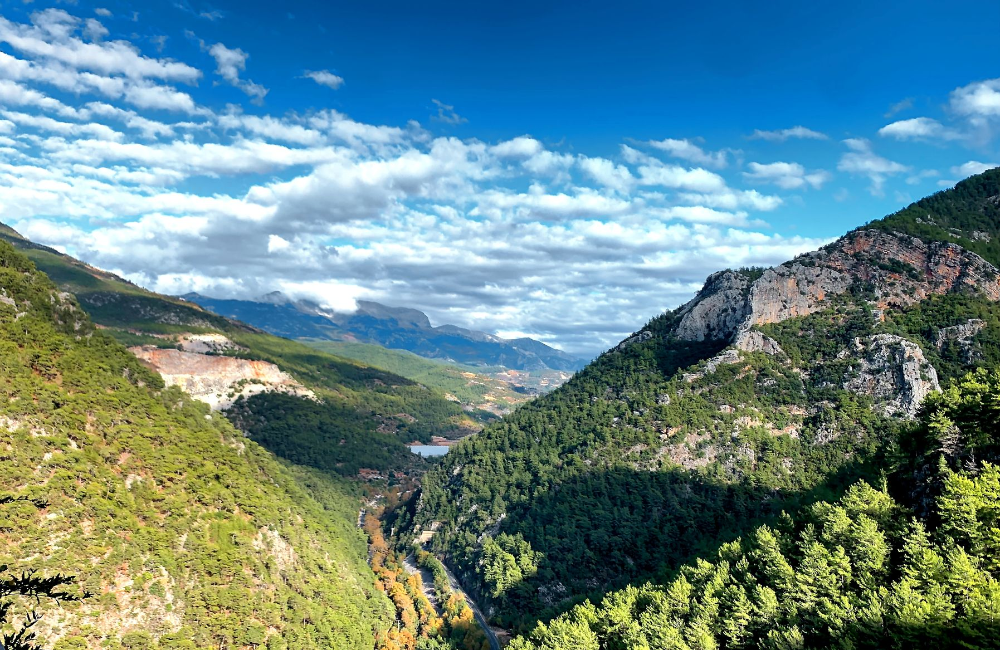
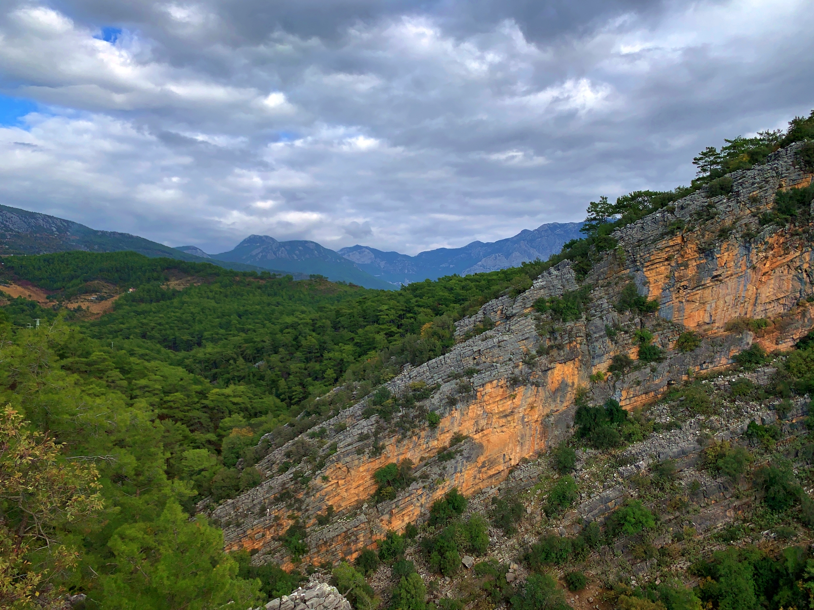
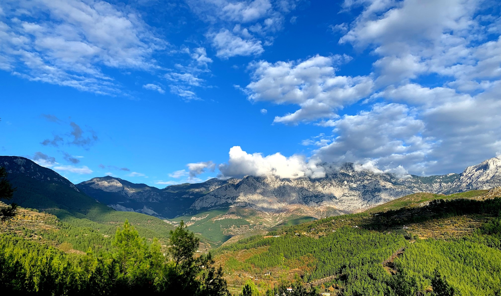
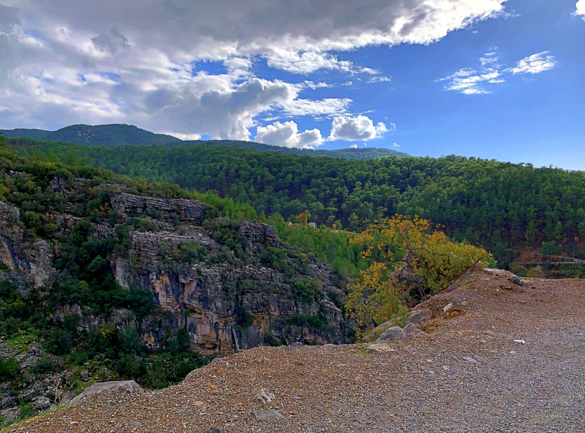
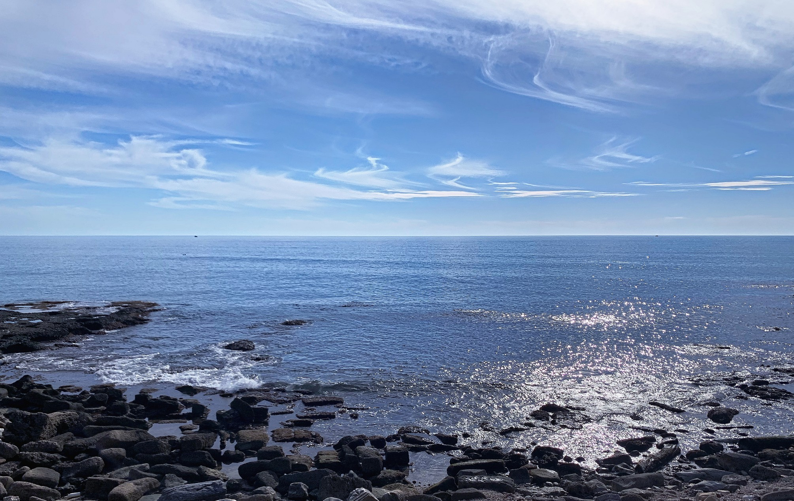
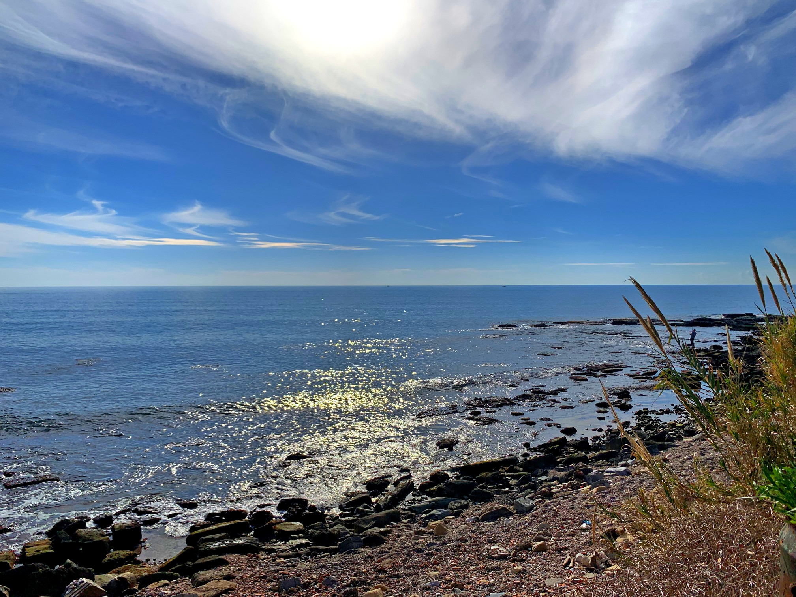

☰
Visual
Silence
✖
Home
The Sky
The Sea
The City
The Streets
Your Face Is A Visual Song
The Sky










Landing
Antalya
Tue., 29 Nov. 2022
Alanya
Thu., 01 Dec. 2022
Alanya
Thu., 01 Dec. 2022
Alanya
Thu., 01 Dec. 2022
Alanya
Thu., 01 Dec. 2022
Alanya
Fri., 02 Dec. 2022
Alanya
Fri., 02 Dec. 2022
Alanya
Fri., 02 Dec. 2022
Side, Turkey
Sat., 03 Dec. 2022
Side, Turkey
Sat., 03 Dec. 2022